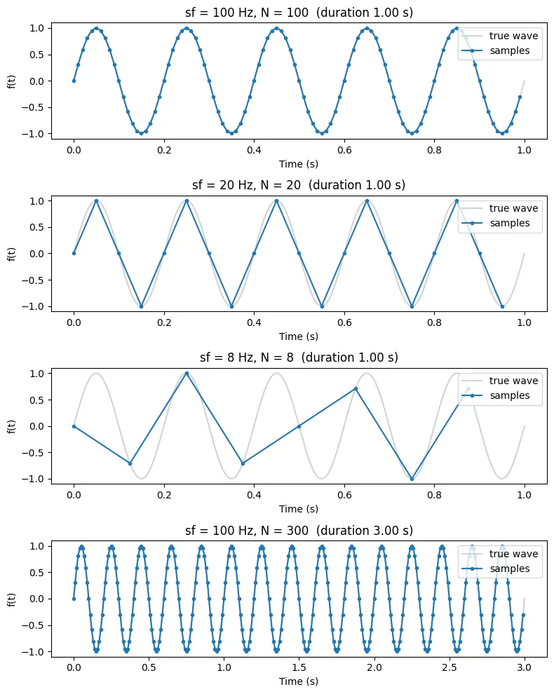
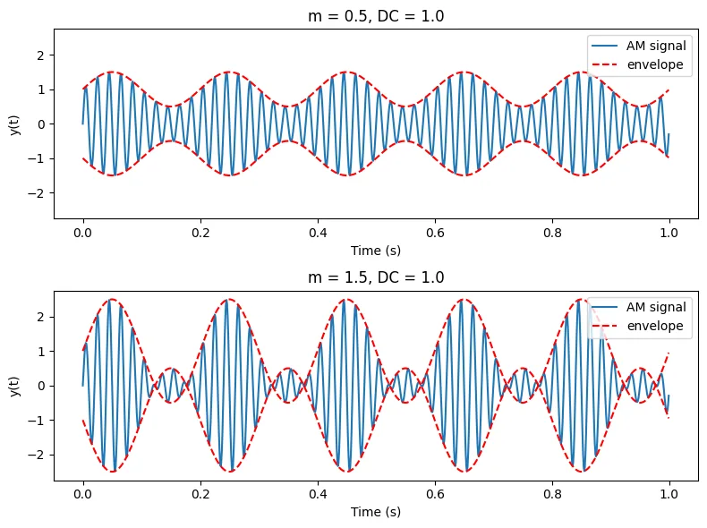
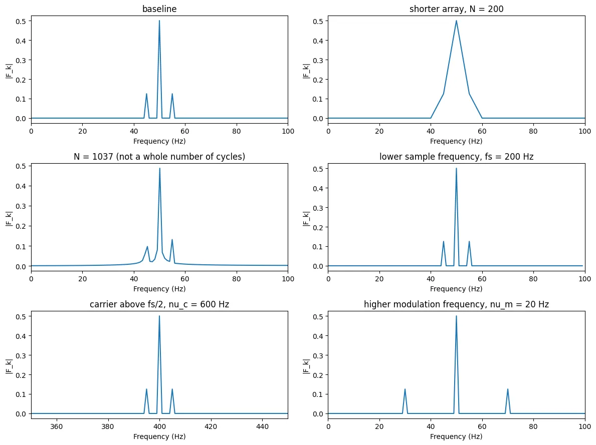
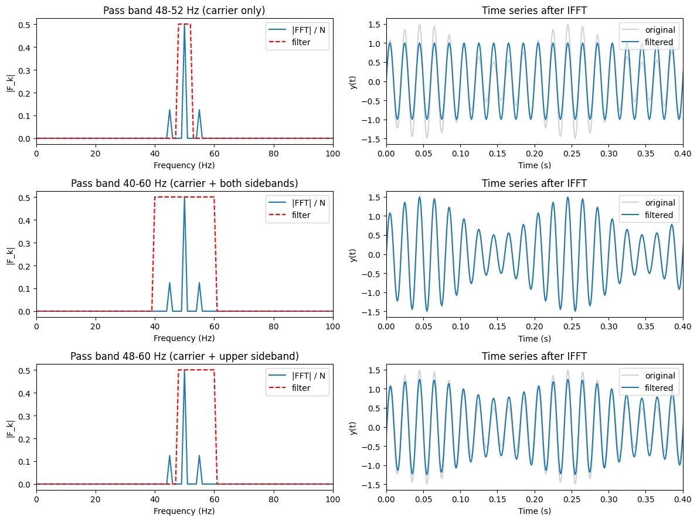

What the notebook does
- Samples a 5 Hz sine at several rates, including below twice its frequency to show aliasing.
- Generates an AM signal (a 5 Hz message on a 50 Hz carrier, sampled at 1 kHz), including over-modulation.
- Implements the discrete Fourier transform from the lab sheet's definition and checks it against NumPy's FFT.
- Explores spectral leakage with a sample count that isn't a whole number of cycles, a lower sample rate, and a carrier above half the sample rate.
- Band-pass filters the AM signal in the frequency domain (carrier only, carrier with both sidebands, carrier with the upper sideband) and returns to the time domain with an inverse FFT.



